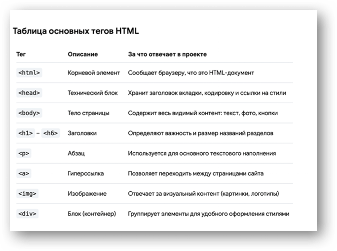
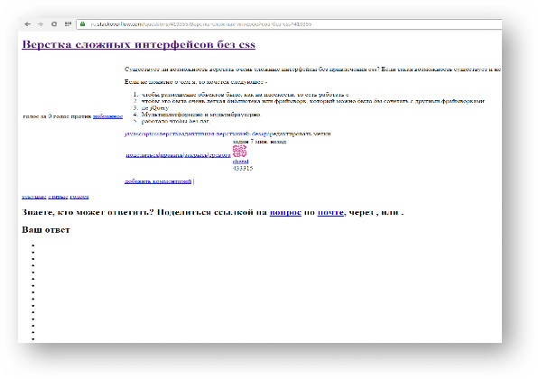

Основы HTML
HTML можно расшифровать как «язык гипертекстовой разметки». HTML – язык разметки для создания структуры веб-страницы. Благодаря разметке браузер знает в каком порядке отображать элементы.
Гипертекст – это вид текста, который существует только в электронном виде, его основным отличием от обычного текста является наличие электронных ссылок. CSS – язык каскадных стилей, который задаёт визуальное оформление для HTML.
Если использовать аналогию со строительством, то HTML отвечает за создание прочного каркаса и стен здания, а CSS за его внешнюю отделку, дизайн и цветовое оформление.
Важно понимать, что HTML не является языком программирования в классическом смысле, так как он не описывает алгоритмы или логические вычисления. Его главная и первостепенная задача заключается в логическом структурировании контента. HTML оперирует тегами. Теги – это специальные команды для браузера, которые пишутся в угловых скобках. Они работают как инструкции: браузер видит тег и понимает, что именно нужно показать на экране.
Теги являются основной структурной единицей веб-страницы, они всегда заключены в угловые скобки (например, <br>). Большинство тегов являются парными, то есть имеют открывающий и закрывающий элемент (<div></div>).
Также теги могут иметь атрибуты, определяющие какие-либо их свойства (например, размер шрифта для тега <font>). Атрибуты указываются в открывающем теге (например атрибут href, <a href="http://example.com"></a>). Для упрощения работы я создал таблицу основных тегов в HTML.

Если HTML задаёт то, что находится на странице (заголовок, абзац, изображение, кнопка), то без CSS (без внешнего вида) веб-страница выглядит как простой текстовый документ.
